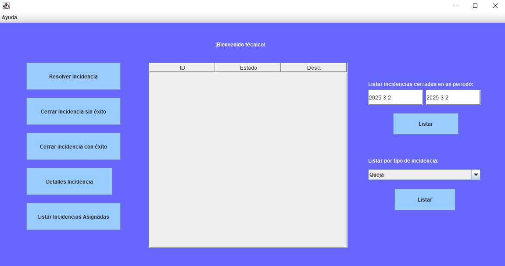

Técnico
El técnico es aquel que resuelve incidencias y las cierra, el gestor o el administrador le asignan estas
incidencias.
El técnico podrá:
- Resolver una incidencia
- Cerrar una incidencia
- Visualizar las incidencias en espera
- Filtrar por periodo de incidencia
- Filtrar por tipo de incidencia
Imágen de referencia

Para la visualización se cuenta con una tabla en medio